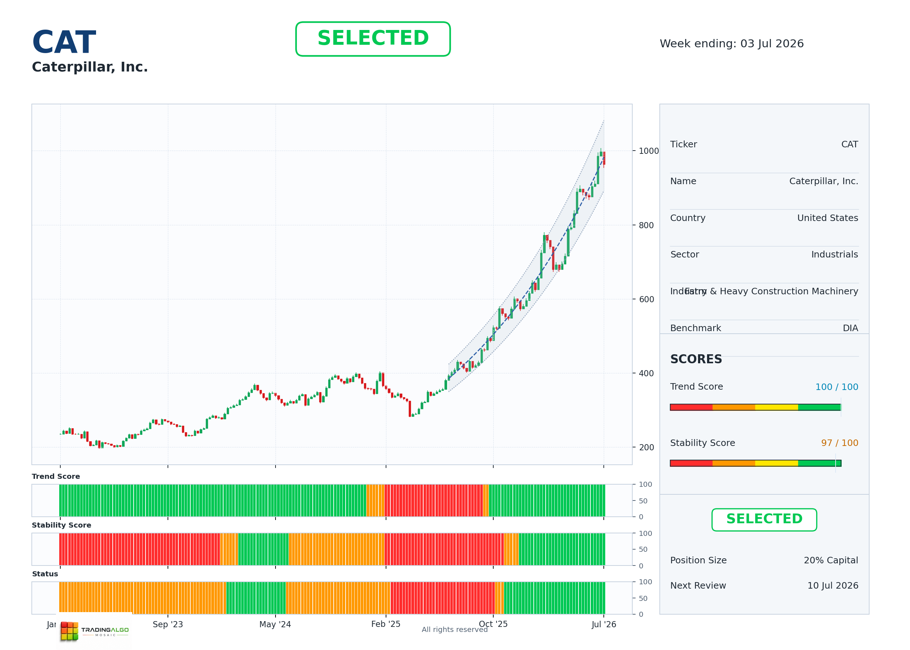
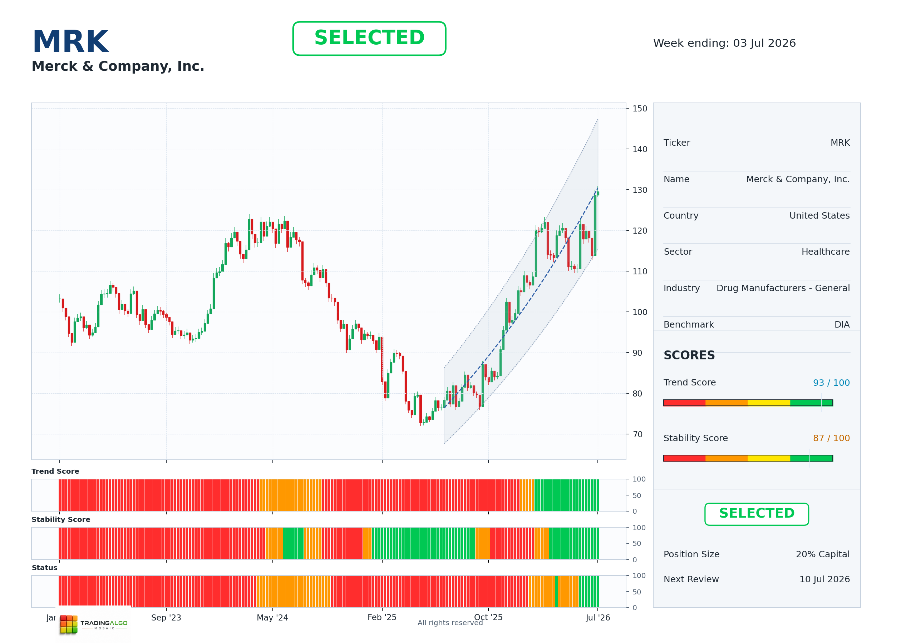
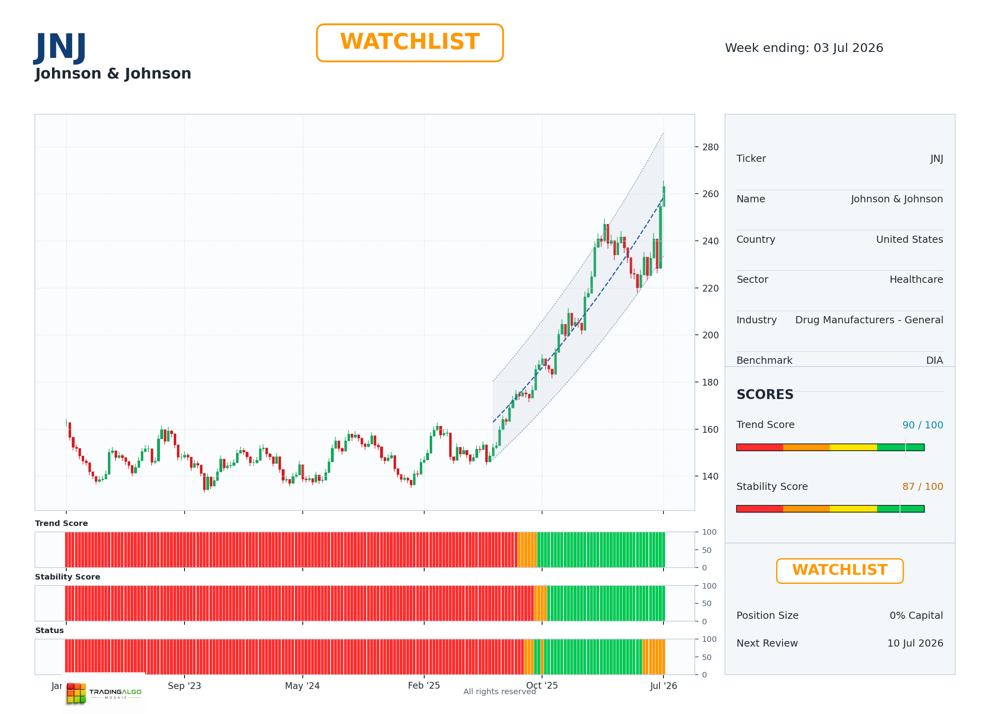
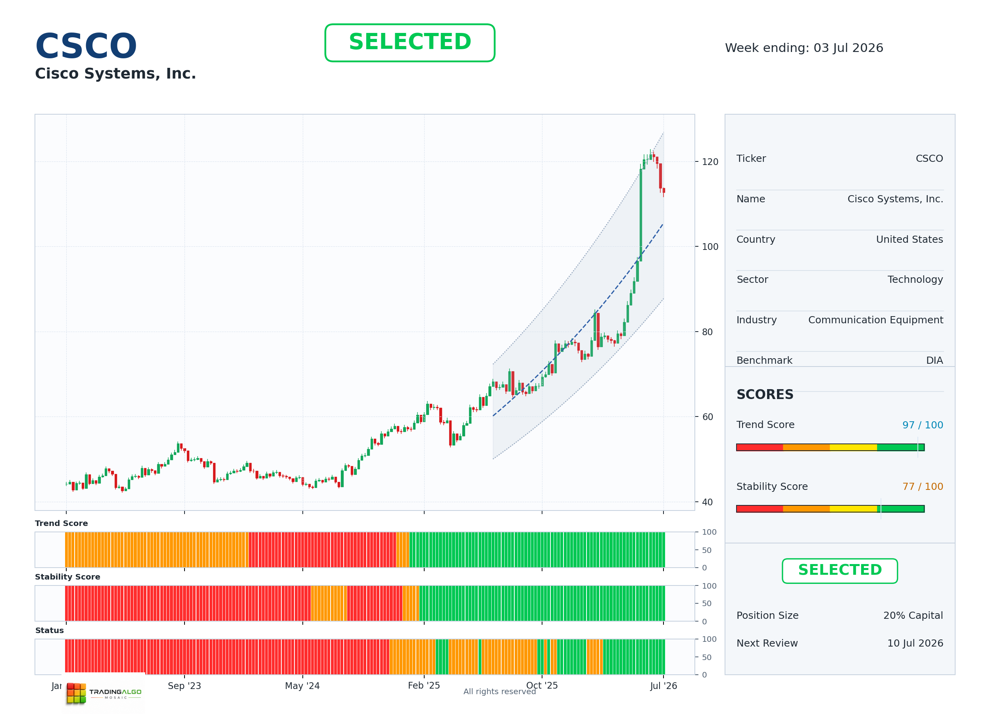
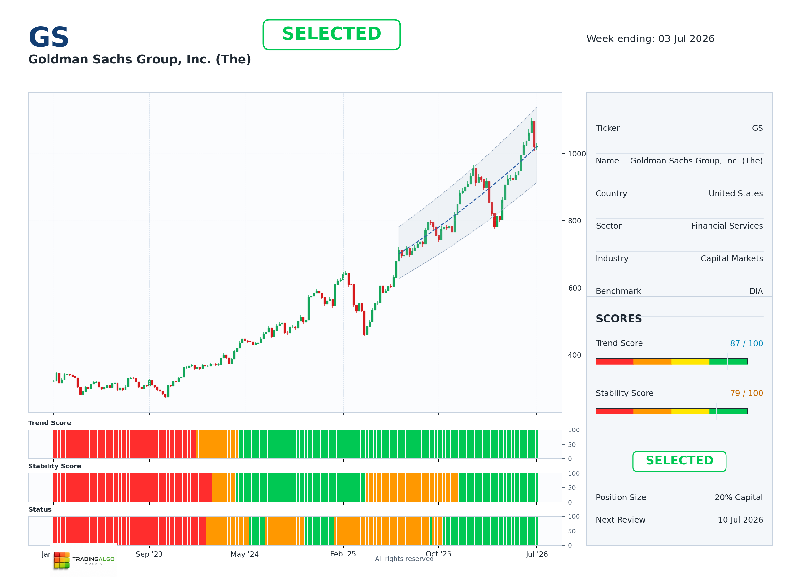
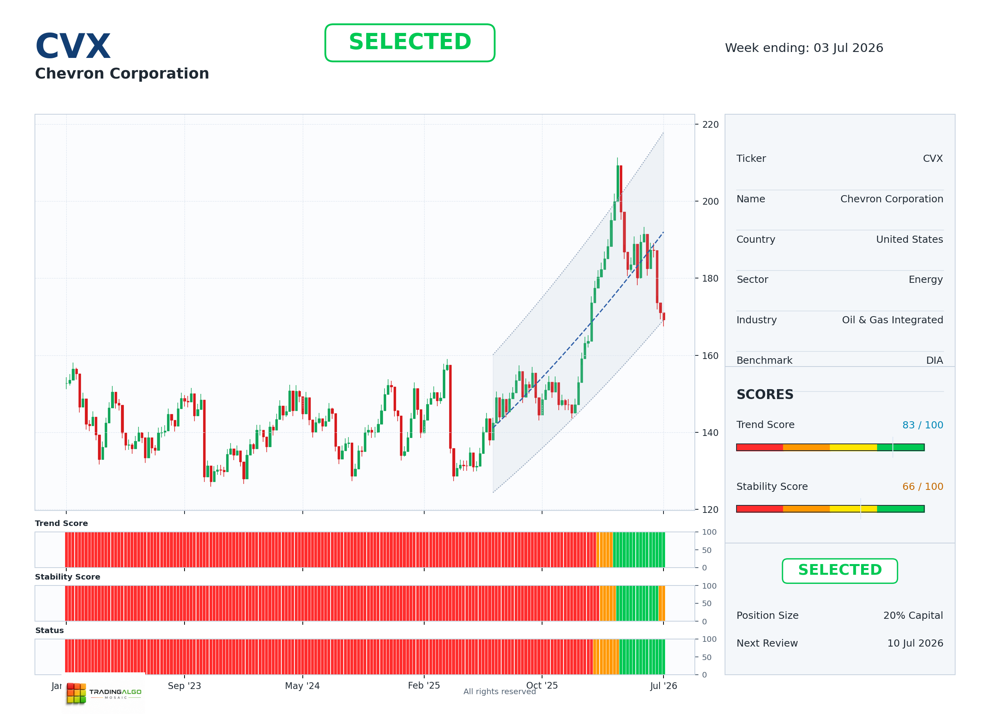

The Core Difference
In investment research, a great deal of attention is usually given to stock picking: finding the best company, the strongest chart, the most attractive valuation or the security with the highest expected return. The logic is intuitive, but it is incomplete.
A portfolio is not just a list of good stocks. It is a structure made of positions that interact with one another. Two securities can both look attractive in isolation, but if they move in the same way, belong to the same risk factor or add the same exposure, the second position may increase concentration without adding meaningful diversification.
Portfolio construction starts from a different question: not simply "Which stocks are good?", but "Which combination of stocks creates the most robust portfolio?"
Stock Picking
Focuses on the individual security. The decision is mostly based on whether one stock appears attractive by itself.
Portfolio Construction
Focuses on the interaction among positions. The decision is based on trend quality, stability, diversification and portfolio contribution.
How TradingAlgo Mosaic Approaches the Problem
TradingAlgo Mosaic is designed around portfolio construction rather than isolated stock selection. The model starts from a broad market universe, ranks each security, applies trend and stability criteria, and then checks whether each candidate contributes positively to the portfolio structure.
The objective is not to generate a list of five interesting stocks. The objective is to create a concentrated model portfolio that can be monitored, compared with a benchmark and updated when market leadership changes.
A stock can be attractive individually and still be rejected if it does not improve the portfolio. Conversely, a stock can be selected because it improves the overall structure, even if it is not the most obvious standalone idea.
What Happened in the Last Eight Weeks: DJ30
The DJ30 portfolio was stable for most of the last eight weeks, with one relevant rotation. From 1 May to 15 May 2026, the selected portfolio was CAT, CSCO, CVX, GS and JNJ. In the week of 22 May 2026, MRK entered the selection and JNJ moved out of the selected portfolio into the watchlist. Since then, the model has kept the same five-stock allocation: CAT, MRK, CSCO, GS and CVX.
This is a good example of portfolio construction rather than stock picking. The change was not a broad reshuffle and it was not a rejection of the healthcare sector. It was a targeted replacement inside the healthcare sleeve: MRK took the selected role because it offered a stronger fit under the current trend, stability and correlation filters, while JNJ remained close enough to stay on the watchlist.
| Week | Selected Portfolio | Hedge | Change |
|---|---|---|---|
| 2026-05-01 | CAT, CSCO, CVX, GS, JNJ | 11.83% short DIA | No change |
| 2026-05-08 | CAT, CSCO, CVX, GS, JNJ | 11.97% short DIA | No change |
| 2026-05-15 | CAT, CSCO, CVX, GS, JNJ | 11.07% short DIA | No change |
| 2026-05-22 | CAT, CSCO, CVX, GS, MRK | 12.83% short DIA | MRK entered; JNJ moved out |
| 2026-05-29 | CAT, CSCO, CVX, GS, MRK | 12.84% short DIA | No change |
| 2026-06-05 | CAT, CSCO, CVX, GS, MRK | 13.06% short DIA | No change |
| 2026-06-12 | CAT, CSCO, CVX, GS, MRK | 13.24% short DIA | No change |
| 2026-06-19 | CAT, CSCO, CVX, GS, MRK | 12.40% short DIA | No change |
Current DJ30 Portfolio
The latest TradingAlgo Mosaic run selected the following DJ30 portfolio:
- CAT - Caterpillar, Industrials, Farm & Heavy Construction Machinery
- MRK - Merck & Company, Healthcare, Drug Manufacturers - General
- CSCO - Cisco Systems, Technology, Communication Equipment
- GS - Goldman Sachs, Financial Services, Capital Markets
- CVX - Chevron, Energy, Oil & Gas Integrated
Five Stock Charts in Context
The model also produces detailed dashboards for each selected security. These charts help evaluate individual trend quality, price behavior and stability. However, their main value emerges when they are read together with the portfolio summary.
This is the practical difference between stock picking and portfolio construction. Stock picking stops at the individual dashboard. Portfolio construction asks whether the individual dashboard supports the structure of the whole selection.






Comment on the Current DJ30 Portfolio
The current DJ30 portfolio is broad for a five-stock selection. It combines industrial cyclicality through Caterpillar, healthcare through Merck, technology infrastructure through Cisco, financial services through Goldman Sachs and energy through Chevron. That mix is important: the portfolio is not simply chasing one dominant market theme, but distributing exposure across economically different drivers.
The selection drivers show that all five names passed the correlation filter. This is the key portfolio-construction point. CAT has the strongest slope and the highest stability reading, while MRK, CSCO, GS and CVX provide additional trend-qualified exposures with different sector roles. No ticker was added or removed in the latest update, which suggests the model currently sees the existing structure as still valid rather than requiring rotation.
The main caveat is risk. The strategy has produced a higher CAGR and a better Sharpe ratio than DIA, but with a deeper maximum drawdown. For this reason the DJ30 example should be read as a return-seeking portfolio with active risk, not as a low-volatility substitute for the benchmark.
The six charts above should therefore be read together. The single-stock dashboards explain which building blocks currently support the DJ30 selection, and the JNJ chart adds context for the healthcare rotation into MRK.
Conclusion
Stock picking can generate useful ideas. Portfolio construction turns those ideas into a disciplined process.
TradingAlgo Mosaic is built around this principle. It does not simply search for attractive stocks. It builds and monitors model portfolios where each position has a role, each update has a reason and the final result can be measured against a benchmark.
The most important question is therefore not "Which stock should I buy?" but "Which portfolio am I building?"
Open the DJ30 HTML report